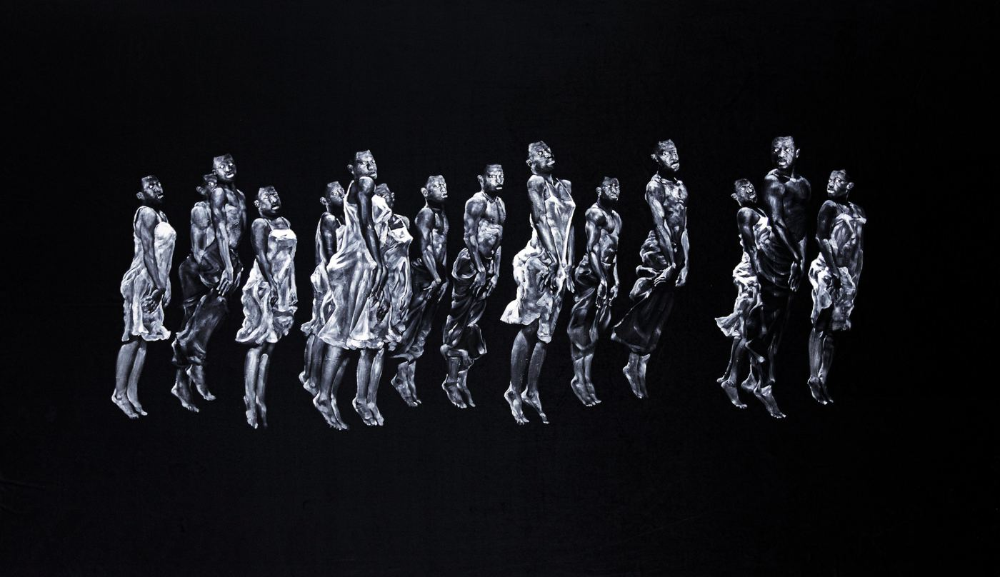

Abidjan · Exposition en cours
Roméo Mivekannin. Du 5 novembre 2026 au 9 janvier 2027, à la galerie d'Abidjan. Quatorze œuvres sur toile libre, entre archives coloniales et mémoire vive.
Visiter en 3DL'artiste
Les artistes
Les artistes de la galerie sont nés ou travaillent dans 15 pays, de Dakar à Nairobi, d'Abidjan à New York. Choisissez un pays pour les découvrir.
Trois espaces
Depuis 2012
La galerie principale à Cocody et le Project Space, ouvert en 2020 pour une programmation prospective.
Depuis 2018
Un espace d'exposition au Sénégal, et des expositions hors les murs au Sokhamon.
Depuis 2018
Un showroom dans le 7e arrondissement, sur rendez-vous.